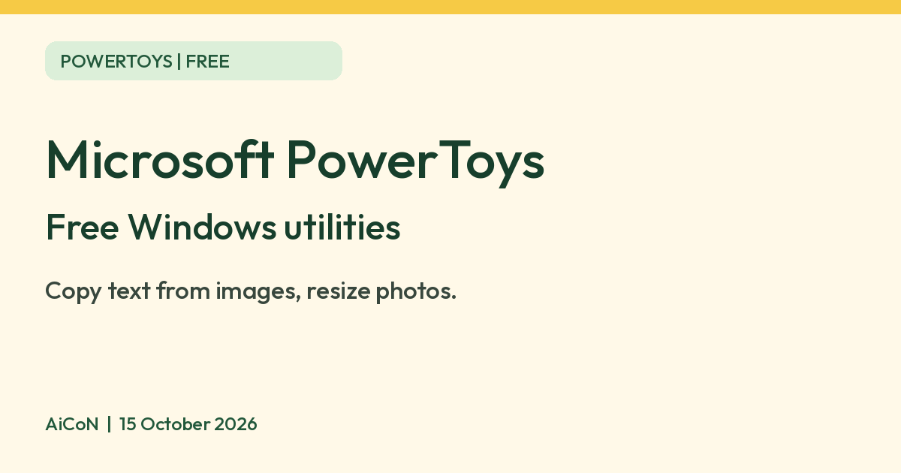

Microsoft PowerToys: free Windows tools for text extraction, resizing and more
Microsoft describes PowerToys as a set of free, open-source Windows utilities, including tools to copy text from any image and resize photos in bulk.

What it is
Microsoft PowerToys is a bundle of small add-on tools for Windows. Microsoft's documentation calls it a set of free, open-source utilities that add things Windows does not have built in. Microsoft aimed it at power users and developers, but several tools help anyone: copy text out of any image on screen, resize photos in bulk, rename many files at once, or keep a window on top of the others. It is mainly not an AI tool, though one part has an optional AI feature (see below). We included it because it is a free app from an official source.
Is it free?
Yes. Microsoft's PowerToys page on Microsoft Learn describes it as "a set of free, open-source utilities". We saw no price, sign-up or paid tier on the pages we read. The one place money can come in is the optional AI paste feature, which uses an AI provider you set up yourself (see "What to watch out for").
Handy tools for everyday use
- Text Extractor: "Copy text from anywhere on your screen using OCR", per Microsoft's list.
- Image Resizer: "Quickly resize images with a right-click in File Explorer."
- PowerRename: bulk renaming with search and replace, and undo.
- FancyZones: create window layouts and snap windows into them.
- Always On Top: pin a window above others with a shortcut.
- Color Picker: pick a colour from anywhere on the screen.
- Awake: keep the computer awake without changing power settings.
- Peek: preview a file without opening an app.
The page lists many more, including tools aimed at developers such as a Hosts file editor and Registry Preview. You can turn each tool on or off in PowerToys settings.
How to install it
- Requirements: Microsoft's install page says Windows 11, or Windows 10 version 2004 (build 19041) or newer, and a 64-bit processor (x64 or ARM64). It also installs the Microsoft Edge WebView2 Runtime during setup.
- Ways to install: Microsoft recommends the installer from the PowerToys GitHub releases page or the Microsoft Store page. It also lists WinGet, Chocolatey and Scoop.
- Windows only. We found no Mac, Linux, Android or iPhone version.
What to watch out for
- AI paste is optional and may cost money. Advanced Paste is a clipboard tool. Microsoft says its non-AI actions, such as paste as plain text, JSON or Markdown, run locally. "Paste with AI" is optional and can use an online provider or a local one. For online providers such as OpenAI, Azure OpenAI, Mistral and Google, Microsoft says you need an API key and "might pay for usage". Local options include Foundry Local, Ollama and Phi Silica, which needs a supported Copilot+ PC.
- Pick two or three tools. There are around 30. Turn on only what you need.
- Some tools are technical. Registry and Hosts file editors can change system settings, so skip those unless you know what you are doing.
Privacy and data
- The PowerToys data and privacy document on GitHub says diagnostic data is completely optional and off by default from version 0.86. It says the data covers usage, stability and performance.
- Microsoft's settings page says you can turn diagnostic data collection on or off in General settings, and view the data.
- The same document points to Microsoft's privacy statement. We did not read that statement.
- If you use online AI paste, what you paste goes to the provider you chose. Check that provider's policy.
India
- We found no India restriction on the pages we read. The install page does not state country availability. We did not test it from India.
Frequently asked questions
Is PowerToys free?
Microsoft describes it as a set of free, open-source utilities.
Does it work on Windows 10?
Microsoft says Windows 10 version 2004 (build 19041) or newer works, as does Windows 11.
Does it send my data to Microsoft?
Microsoft says diagnostic data is optional and off by default from version 0.86.
Sources: PowerToys overview, Install, Advanced Paste, General settings, Data and privacy. Checked 15 October 2026.
No PowerToys logo is used in this article. Independent guide, not affiliated.